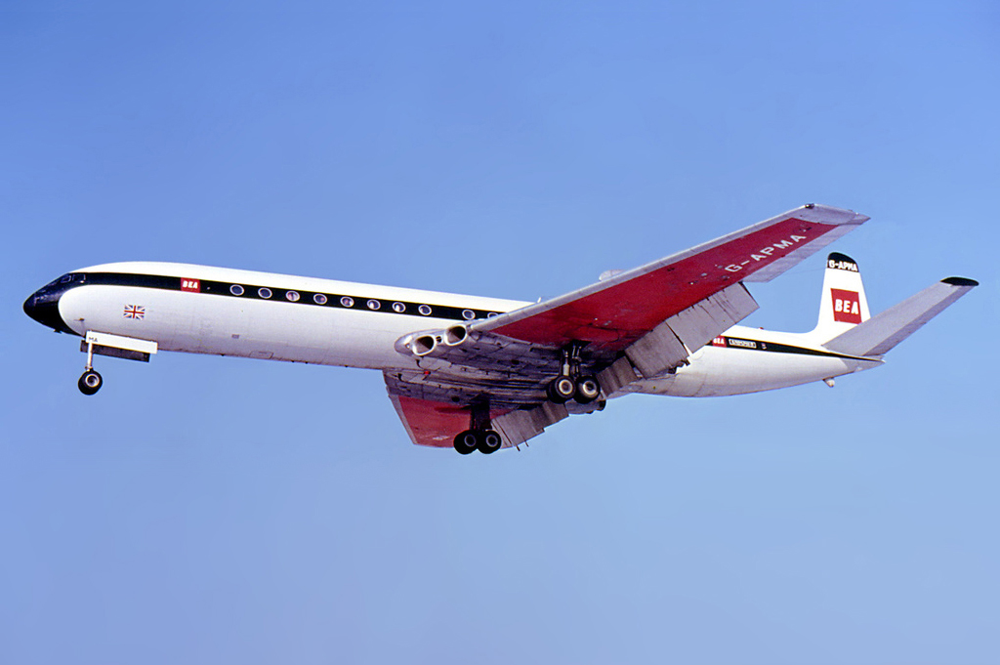

|
Late 19th century In the course of the 19th century, scientists and inventors worked on the basic principles of flight, experimenting with gliders and ungainly steam-powered models. |
|
|
1900's Wright brothers finally achieve practical powered aeroplane flight with the first successful flight of The Flyer in 1903. |
|
|
1910's The period up to 1914 brought spectacular progress. The public was enthralled by long-distance flying races and display of aerobatics, although between 1914 and 1918 aircraft found their use as instruments of war. |
|
|
1920's and 1930's Defying the postwar recession and Great Depression that followed, these decades blossomed into the “Golden Age” of aviation. These years saw the introduction of Douglas DC-3 (which still flies today), Boeing 247 and Lockheed Model 10 Electra as the first passenger airplanes. |
|
|
1940's WW2 was mostly fought with aircraft that were at least on the drawing board before the war began. These years saw a massive production upscale and first jet powered planes made their presence. Supermarine Spitfires, Yak-3s, P-51s and Messerschmitts battled for the skies. |
|
|
1950's Until the 1940’s, air travel was a growing but marginal alternative to travel by ship and train. By 1957, however more people were crossing the Atlantic by plane than by boat. With equipment developed in WW2 such as pressurized cabins, radars, improved communication and navigation systems, commercial air travel was more popular than ever. Propliners offered non-stop transcontinental and transoceanic flights and the first jet powered passenger airplane made its debut. |
|
|
1960's Jet powered planes were very common in the skies and they started to replace propliners for a faster and more comfortable way to travel. Although the Cold War was present in our lives more and more, people began to fly. |
|
|
1970's The era of mass air travel started with the introduction of Boeing 747 and DC 10 wide body jets. The French and British were set to revolutionize air travel with Concorde (first and only supersonic airliner) and Airbus made its first steps with the first 2 engine long range jet, the A300. |
|
|
1980's and 1990's Lots of improvements to the flight systems were made in these decades. Airbus settled as the main competitor of Boeing and they introduced all digital cockpits and fly by wire systems with the A320 in 1982. The volatile oil prices forced the industry to use only 2 engine planes for fuel economy. |
|
|
2000's and beyond The ever more climate change awareness has forced the air travel and aircraft manufactures to come up with solutions to that problem and nowadays modern airliners are more fuel efficient, quieter and have less CO2 emissions. |
|
Wright Flyer 1 - 1903 |
Bleriot XI Monoplane - 1910 |
Douglas DC-3 - 1935 |
Boeing 247 - 1933 |
|
Lockheed Model 10 Electra - 1934 |
Messerschmitt ME 262 - 1944 |
Supermarine Spitfire - 1938/1940 |
Douglas DC-7 - 1953 |
|
Lockheed Constellation - 1945/1950 |
 DeHavilland Comet - 1952 |
Boeing 707 - 1958/1960 |
Douglas DC-8 - 1959/1960 |
|
Lockheed U2 - 1960 |
Lockheed SR-71 Blackbird - 1966 |
Boeing 747 - 1970 |
McDonnell Douglas DC-10 - 1971 |
|
BAC Concorde - 1976 |
Airbus A300 - 1974 |
Airbus A320 - 1982 |
Boeing 767 - 1982 |
|
Airbus A330 - 1992 |
Boeing 777 - 1994 |
Boeing 787 - 2011 |
Airbus A350 - 2015 |